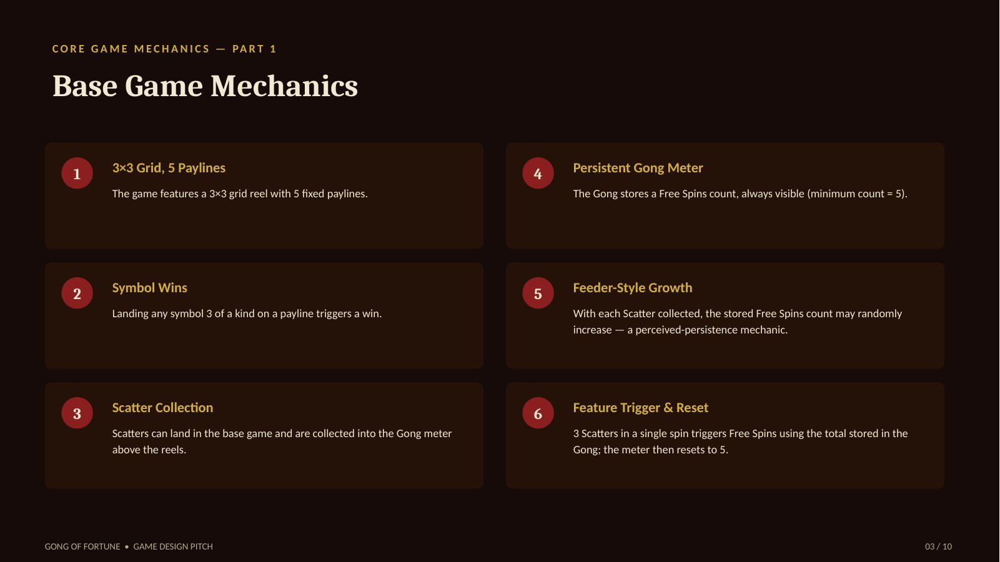
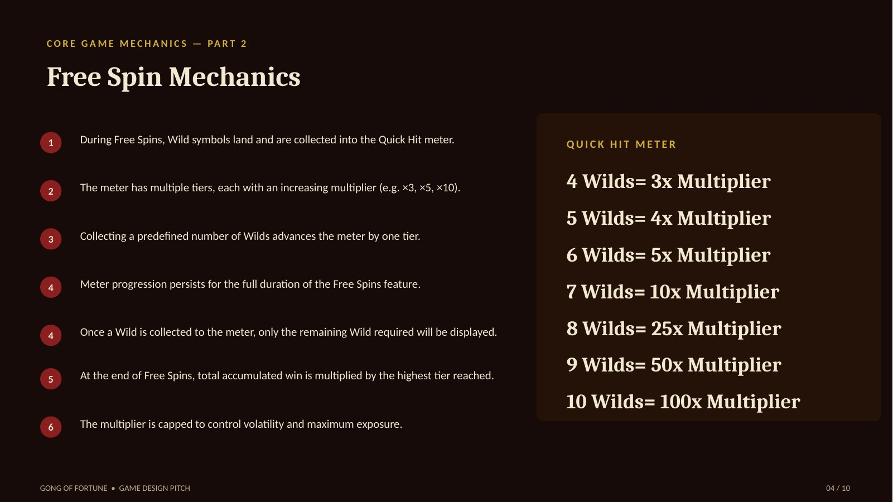
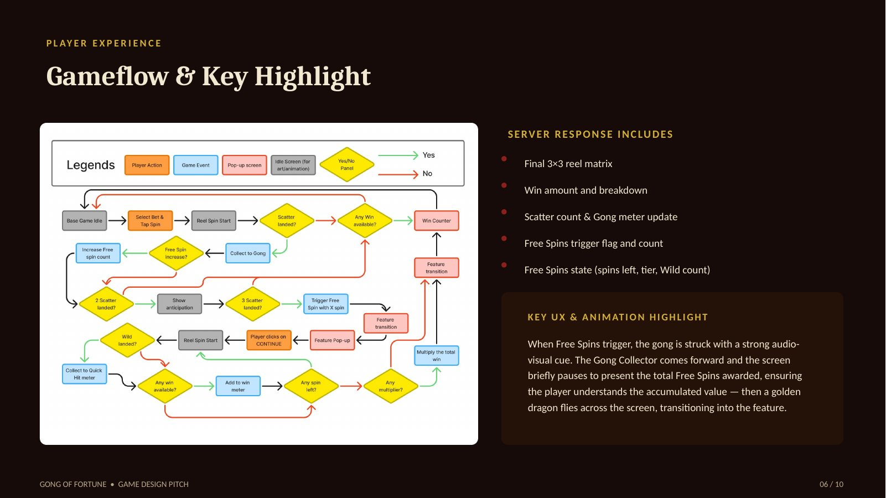
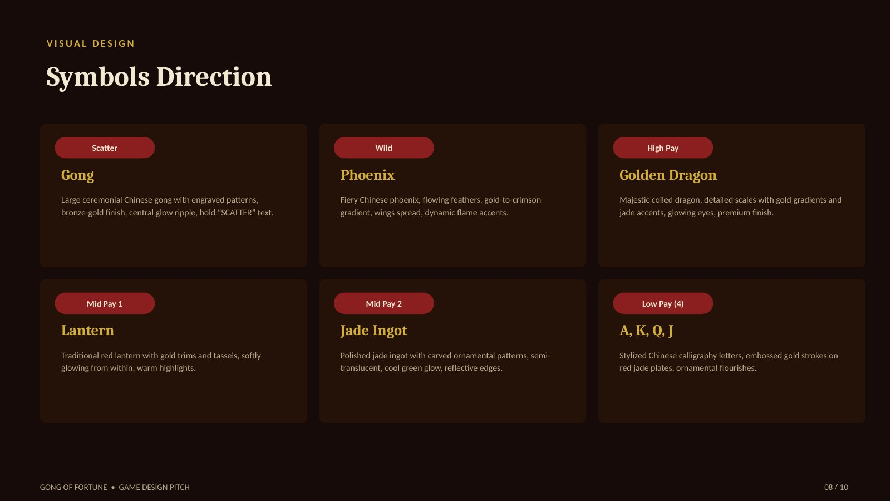
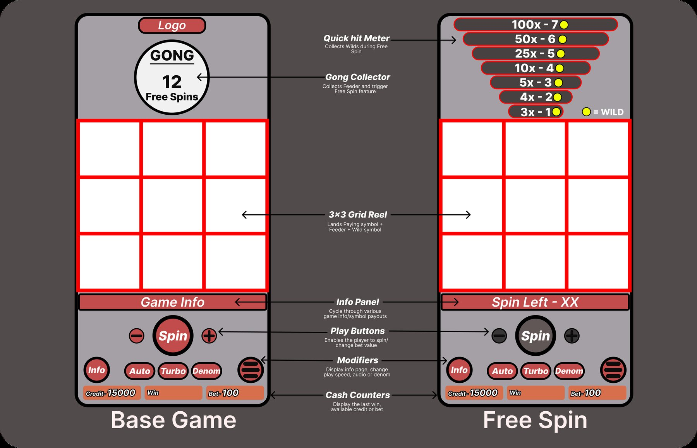
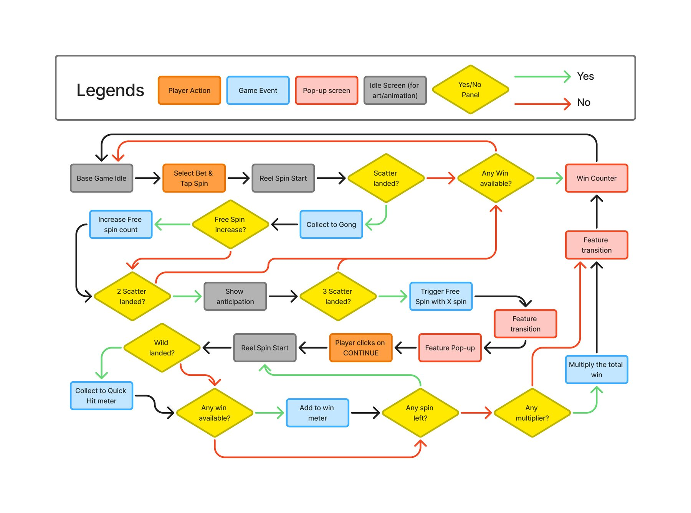
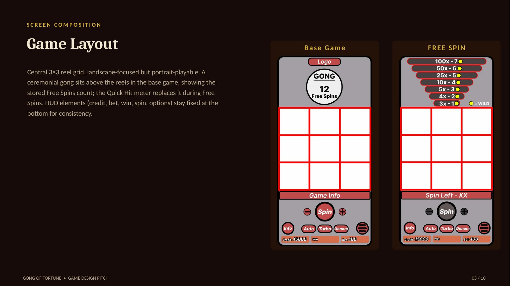

← Prototypes / Gong of Fortune
Video slot · 43" land-based
Gong of Fortune
Strike the gong. Wait for the multiplier.
3×3 · 5 linesRTP 88–96%Max 1500×Mid-high volatility
Concept
A 3×3, five-payline slot for 43-inch cabinets where the tension is carried by a persistent Gong meter instead of a big grid. The meter builds across spins (minimum five), three scatters trigger the Free Spins, and the Quick Hit feature turns four to ten wilds into a 3× to 100× multiplier.
My role
Principal designer: feature ideation, GDD and game flow, symbol and layout documentation, the UI and UX flow, and a playable browser prototype of the Gong meter and free spins.
Grid3 reels × 3 rows
Paylines5
Cabinet43"
RTP88–96% (configurable)
VolatilityMid-high
Max win1,500×
Feature trigger3 Gongs = Free Spins
PrototypePlayable (HTML5)
Gameplay
Prototype screens
Captured from the playable prototype.


Process
Design documentation
Pitch deck slides: mechanics, free spins, flow and symbols.




UI / UX
Screens, flows and layout


